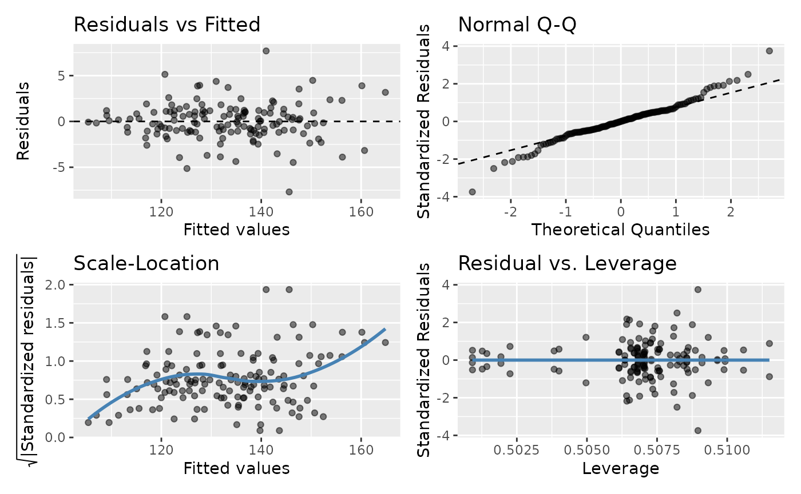

Diagnostic Plots
Jonathan Bakdash and Laura Marusich
2024-07-25
Source:vignettes/model_diag.Rmd
model_diag.RmdRunning Example Requires gglm (White 2023)
#Install gglm
install.packages("gglm")
require(gglm)Plotting Model Diagnostics
The code below demonstrates how to plot model diagnostics for
rmcorr. There are four diagnostic plots assessing:
1.
Residuals vs. Fitted values: Linearity
2. Quantile-Quantile (Q-Q):
Normality of residuals
3. Scale-Location: Equality of variance
(homoscedasticity)
4. Residuals vs. Leverage: Influential
observations
raz.rmc <- rmcorr(participant = Participant, measure1 = Age,
measure2 = Volume, dataset = raz2005)
#> Warning in rmcorr(participant = Participant, measure1 = Age, measure2 = Volume,
#> : 'Participant' coerced into a factor
#Using gglm
gglm(raz.rmc$model)
#using base R
#plot(raz.rmc$model)How much do violations of these assumptions matter? It depends. General Linear Model (GLM) is typically robust to deviations from the above assumptions, but severe violations may produce misleading results (Gelman, Hill, and Vehtari 2020). Also, the reason(s) for violations can matter: “Violations of assumptions may result from problems in the dataset, the use of an incorrect regression model, or both” (Cohen et al. 2013, 117).